I. Introduction
Don't Let the Wisp Die is a survival horror game built in Unity. The player explores a dark forest, guided only by a fading companion Wisp. The goal is to retrieve four objects across sub-maps and bring them to the central Beacon.
Gameplay Features
- The Companion Wisp & Light Management: The Wisp follows the player, providing a dynamic blue light source whose energy decays over time. Players must locate Tombs to collect souls and restore energy, alongside a secondary directional flashlight.
- Exploration & Objectives: Centered around a Hub Beacon. Reaching Gateways teleports the player to additive sub-scenes to retrieve objective items, which must be physically carried back one by one.
- Mini-Games: Includes potato cutting at the cooking station, dish washing at the sink, and toilet fixing in the bathroom.
- Escalating Threat System: Every time an objective is completed and returned, a new type of monster is released. Dying respawns the player at the Beacon but removes one random tombstone; when tombstones run out, the game resets.
Scenes Overview
| Scene | Description |
|---|---|
| Core Hub | Central world with portals to sub-scenes |
| Main Map | Over-world forest connecting all areas |
| House Map | Interior sub-map (kitchen, bathroom, dishes) |
| School Map | Upcoming |
| Park Map | Upcoming |
| Sewer Map | Upcoming |
Controls
| Key | Action |
|---|---|
| W, A, S, D | Movement |
| Shift | Sprint (Consumes Energy) |
| Space | Jump |
| F | Toggle Flashlight |
| E | Interact (Open Doors, Pick up Items) |
| Mouse | Aim Flashlight / Look |
II. Technical
Built using a modular ScriptableObject event-driven architecture and advanced AI in Unity 6.
1. Core Architecture & Movement
Uses decoupled ScriptableObject event channels and variable anchors to eliminate singletons and direct references, paired with a strategy pattern for flexible movement controllers.
2. AI & Threat Systems
Enemies use advanced AI: CrashKonijn GOAP drives complex monster planning and behaviors, while Unity Behavior Graphs handle tree climbing and ambush tactics. A custom trace system lets AI track player footprints and noise.
3. First Area & Dialogue System (OldHouseMap)
Interior sub-maps feature narrative integration via Yarn Spinner for dialogues and voice-overs, a Fluent Cutscene API for cinematic sequences, and a JSON-based save system.
Tech Stack
| Category | Technology |
|---|---|
| Engine | Unity 6000.5.4f1 (Unity 6) |
| Rendering | URP 17.5, Post-processing 3.5, Cinemachine 3.1 |
| Input | New Input System 1.19 |
| AI | CrashKonijn GOAP 3.0.34 & Unity Behavior 1.0.16 |
| Dialogue | Yarn Spinner (Git) |
| Architecture | SO-Event-Driven / Strategy Pattern |
III. Art
Showcase of handmade assets, models, shaders, and audio design (created without AI assistance).
1. Dirty Monster
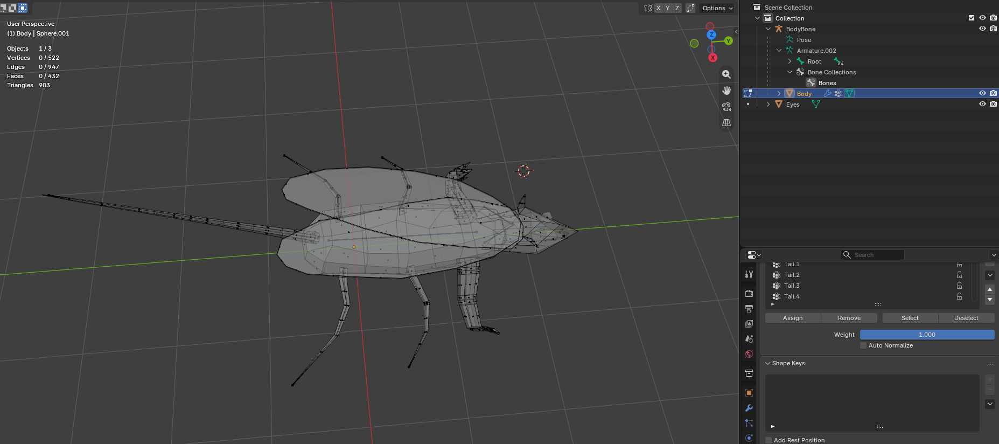
3D Model
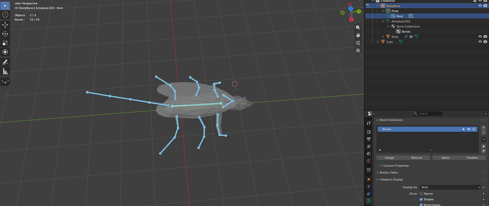
Rigging
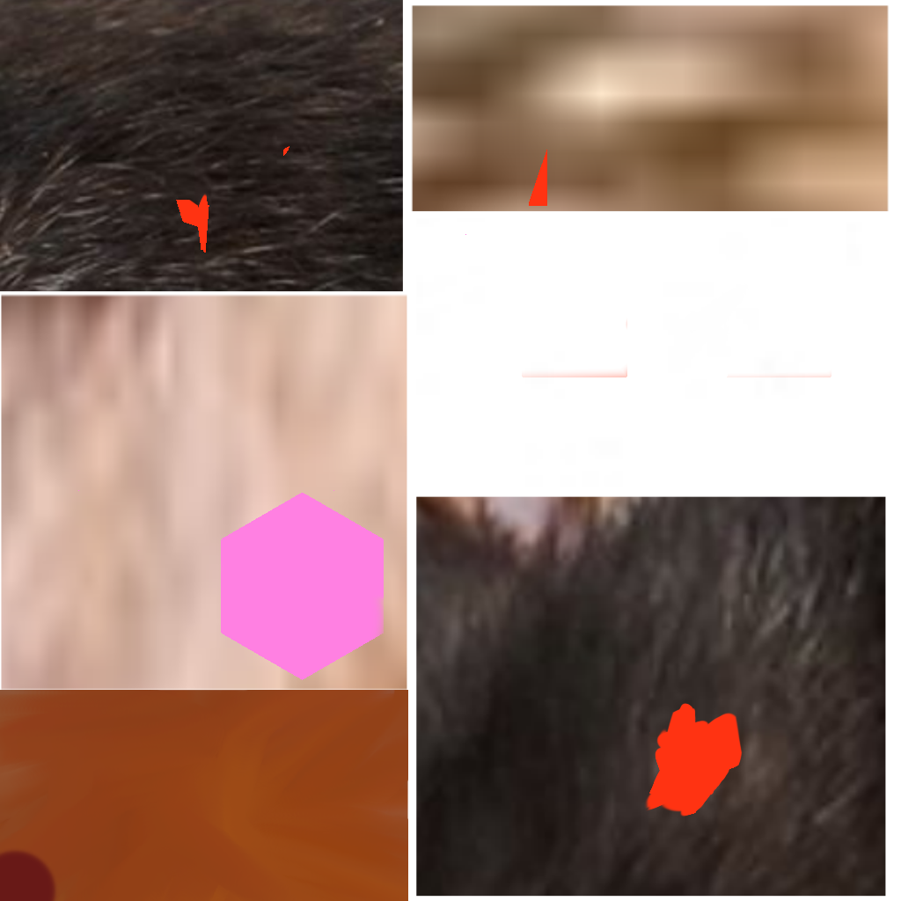
Texture Map
2. Kidnap Monster
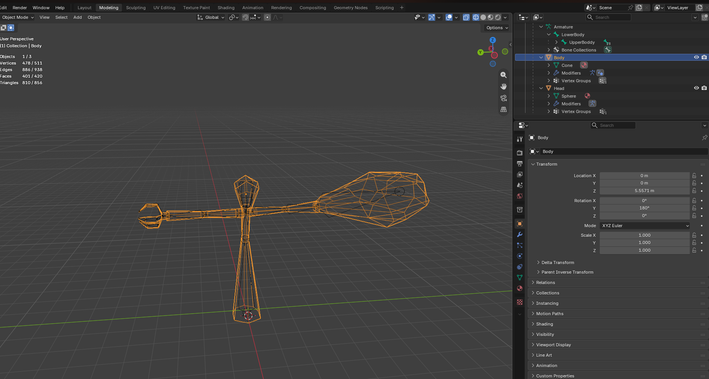
3D Model
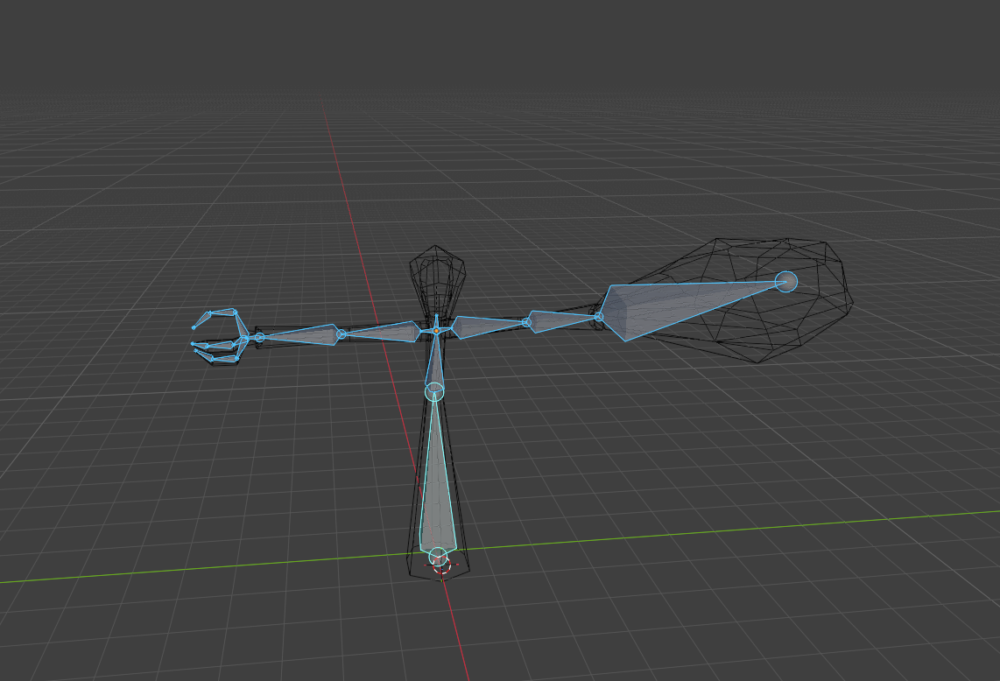
Rigging
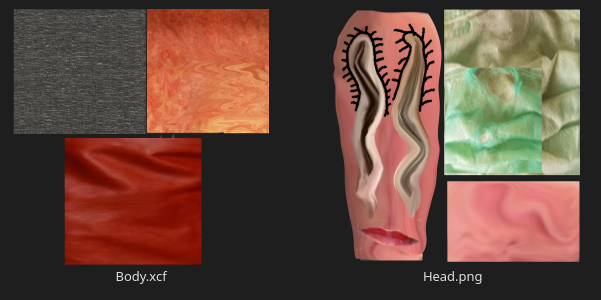
Texture Map
3. Drunk Monster
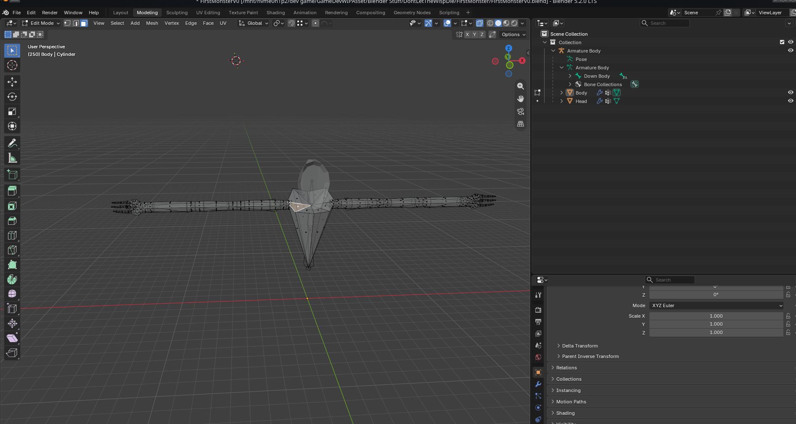
3D Model
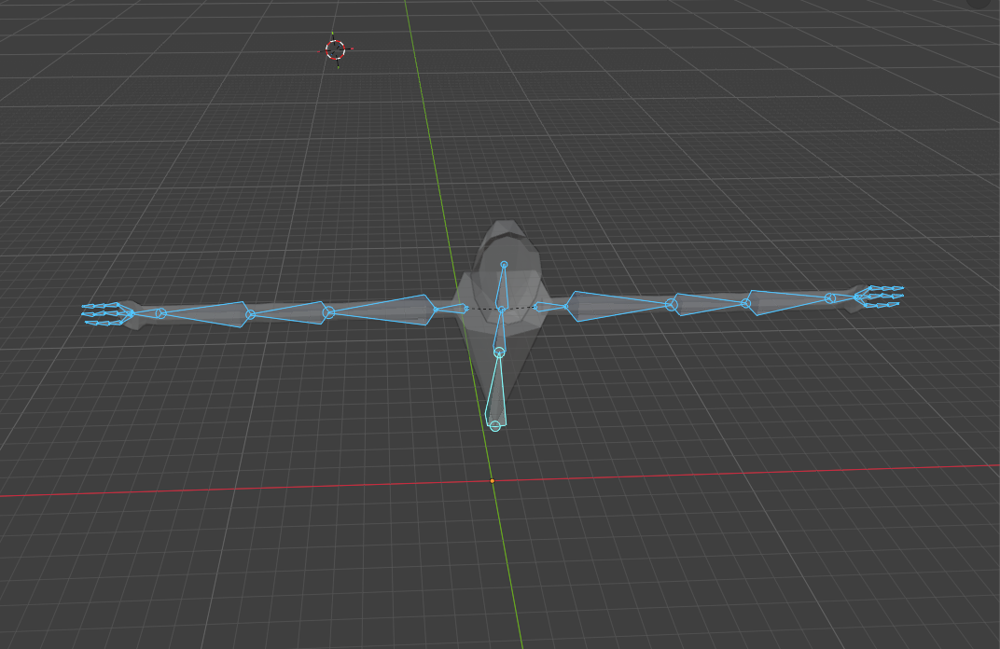
Rigging
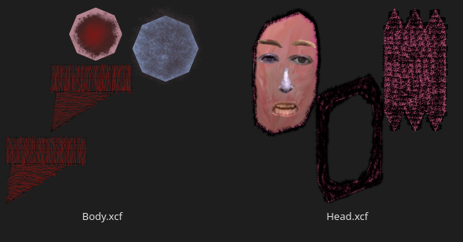
Texture Map
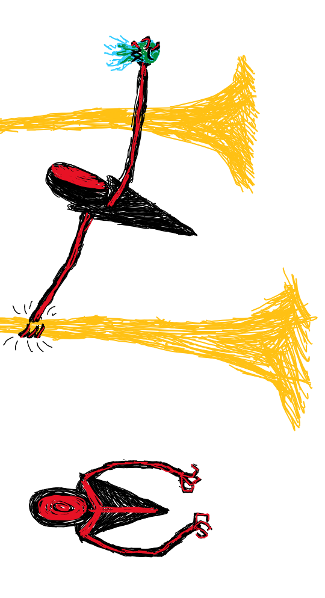
Intruction sketch
4. Eye Monster & Custom Shader
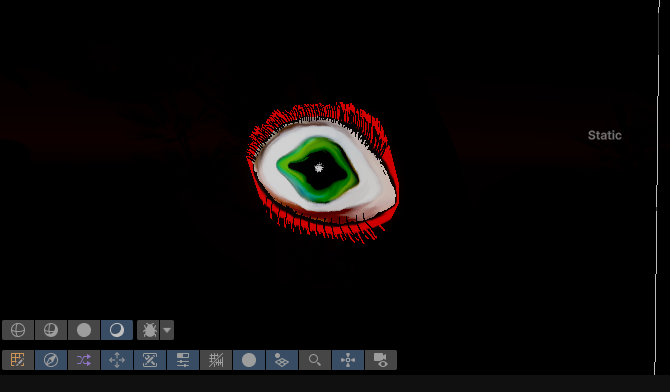
Eye Monster
Rendered with custom outline Shader Graph in Unity URP
5. The Beacon (Hub Object)
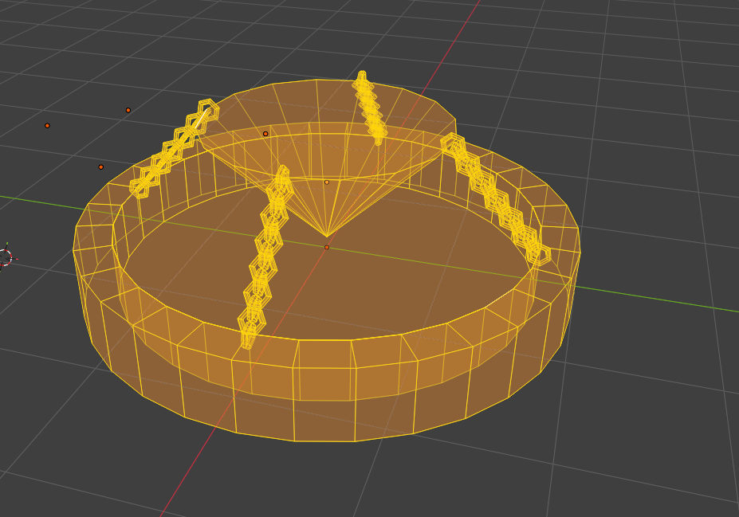
3D Model
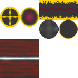
Texture Map
6. Objective Art
...and many more unlisted props, environment materials, and UI assets.
7. Audio Design
Atmospheric horror soundscapes and gameplay sound effects mixed and edit using Audacity, most audio take from Pixabay.